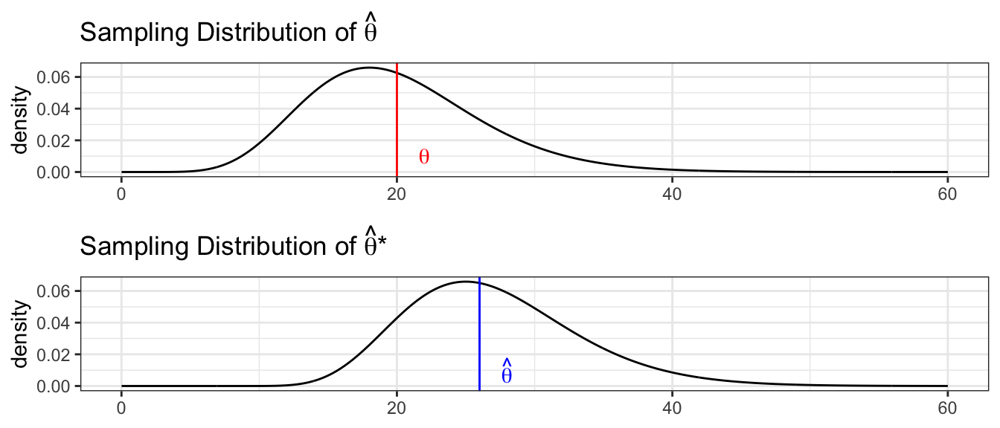
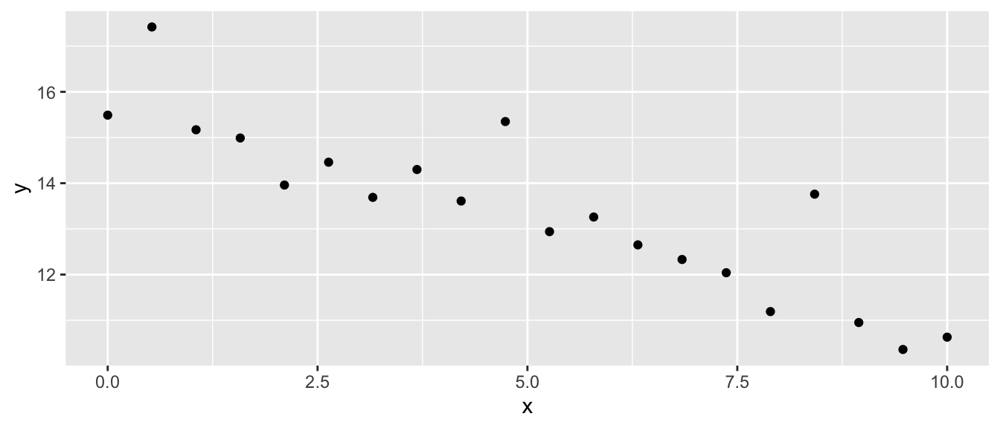
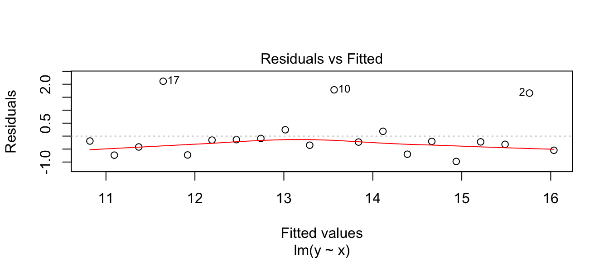
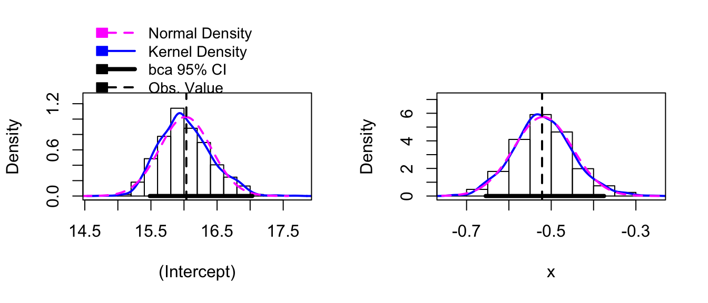
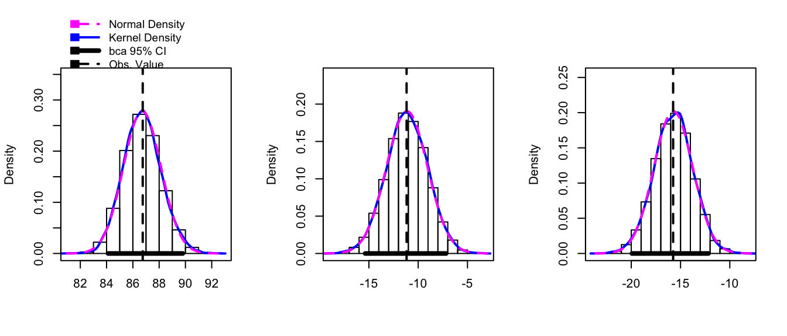
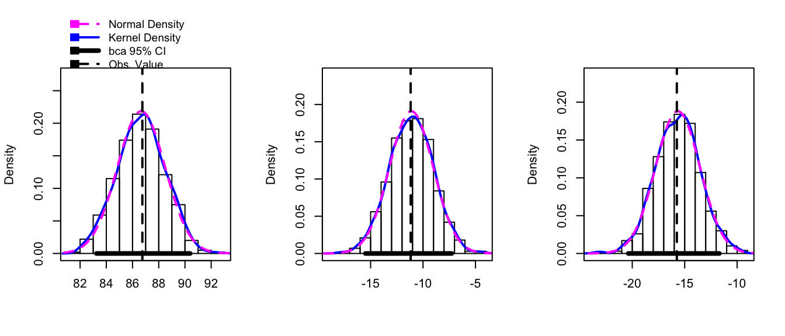

Appendix A : Resampling Linear Models
library(dplyr)
library(ggplot2)
library(ggfortify)
library(car) # for the Boot function
library(boot) # for the boot functionThe last several chapters have introduced a number of parametric models where we assume that the error terms are normally distributed. \[\begin{aligned} \textrm{One-sample t-test:} & \;\;\; Y_{i}=\mu+\epsilon_{i} & \textrm{where} & \;\;\;\epsilon_{i}\stackrel{iid}{\sim}N\left(0,\sigma\right) \\ \textrm{Two-sample t-test:} & \;\;\;Y_{ij}=\mu_{i}+\epsilon_{ij} & \textrm{where} & \;\;\;\epsilon_{ij}\stackrel{iid}{\sim}N\left(0,\sigma\right)\;\;\;i\in\left\{ 1,2\right\} \\ \textrm{ANOVA:} & \;\;\;Y_{ij}=\mu_{i}+\epsilon_{ij} & \textrm{where} & \;\;\;\epsilon_{ij}\stackrel{iid}{\sim}N\left(0,\sigma\right)\;\;\;i\in\left\{ 1,2,\dots,k\right\} \\ \textrm{Regression:} & \;\;\;Y_{i}=\beta_{0}+\beta_{1}x_{i}+\epsilon_{i} & \textrm{where} & \;\;\;\epsilon_{i}\stackrel{iid}{\sim}N\left(0,\sigma\right) \end{aligned}\]
We developed hypothesis tests and confidence intervals for the model parameters assuming that the error terms were normally distributed and, in the event that they are normally distributed, those tests and confidence intervals are the best we can do. However, if the errors are not normally distributed, what should we do?
Previously we used bootstrapping to estimate the sampling distribution of the sampling statistic when we didn’t know the distribution. We will use the same bootstrapping method, but we’ll simplify all of the above cases to the the same simple linear model
\[Y_{i}=E\left(Y_{i}\right)+\epsilon_{i}\;\;\;\textrm{where}\;\;\epsilon_{i}\stackrel{iid}{\sim}N\left(0,\sigma\right)\]
and \(E\left(Y_{i}\right)\) takes on some form of the parameters depending on the model specified. It turns out that R can do all of these analyses using the same lm() function we used in for regression.
11.5 Using lm() for many analyses
11.5.1 One-sample t-tests
In this model we are concerned with testing \[\begin{aligned} H_{0}: & \;\; \mu=\mu_{0}\\ H_{a}: & \;\; \mu\ne\mu_{0} \end{aligned}\] for some \(\mu_{0}\). For example, suppose we have the following data and we want to test \(H_{0}:\mu=5 vs H_{a}:\mu\ne5\). The R code we used previously was
# How we previously did a t.test
test.data <- data.frame( y=c(3,5,4,5,7,13) )
t.test( test.data$y, mu=5 )##
## One Sample t-test
##
## data: test.data$y
## t = 0.79361, df = 5, p-value = 0.4634
## alternative hypothesis: true mean is not equal to 5
## 95 percent confidence interval:
## 2.387727 9.945607
## sample estimates:
## mean of x
## 6.166667but we can just as easily consider this a linear model with only an intercept term.
m1 <- lm(y ~ 1, data=test.data)
summary(m1)##
## Call:
## lm(formula = y ~ 1, data = test.data)
##
## Residuals:
## 1 2 3 4 5 6
## -3.1667 -1.1667 -2.1667 -1.1667 0.8333 6.8333
##
## Coefficients:
## Estimate Std. Error t value Pr(>|t|)
## (Intercept) 6.167 1.470 4.195 0.00853 **
## ---
## Signif. codes: 0 '***' 0.001 '**' 0.01 '*' 0.05 '.' 0.1 ' ' 1
##
## Residual standard error: 3.601 on 5 degrees of freedomconfint(m1)## 2.5 % 97.5 %
## (Intercept) 2.387727 9.945607Notice that we get the same point estimate and confidence interval for \(\mu\), but the p-value is different because the t.test() p-value is testing \(H_{0}:\;\mu=5\) vs \(H_{a}:\;\mu\ne5\) while the lm() function is testing \(H_{0}:\;\mu=0\) vs \(H_{a}:\;\mu\ne0\).
If we really want the correct p-value, we should test if the difference between the \(y\) variable and 5 is zero.
m1 <- lm(y-5 ~ 1, data=test.data)
summary(m1)##
## Call:
## lm(formula = y - 5 ~ 1, data = test.data)
##
## Residuals:
## 1 2 3 4 5 6
## -3.1667 -1.1667 -2.1667 -1.1667 0.8333 6.8333
##
## Coefficients:
## Estimate Std. Error t value Pr(>|t|)
## (Intercept) 1.167 1.470 0.794 0.463
##
## Residual standard error: 3.601 on 5 degrees of freedom11.5.2 Two-sample t-tests
This model is concerned with testing \[\begin{aligned} H_{0}: & \;\; \mu_{1}=\mu_{2} \\ H_{a}: & \;\; \mu_{1}\ne\mu_{2} \end{aligned}\]
# How we previously did a t.test
test.data <- data.frame( y=c(3, 5, 4, 5, 7, 13,
8, 9, 4, 16, 12, 13 ),
group=rep(c('A','B'), each=6) )
t.test( y ~ group, data=test.data, var.equal=TRUE )##
## Two Sample t-test
##
## data: y by group
## t = -1.838, df = 10, p-value = 0.09591
## alternative hypothesis: true difference in means is not equal to 0
## 95 percent confidence interval:
## -9.2176608 0.8843275
## sample estimates:
## mean in group A mean in group B
## 6.166667 10.333333This analysis gave use the mean of each group and the confidence interval for the difference \(\mu_{2}-\mu_{1}\). We could get the same analysis an ANOVA with \(k=2\) groups.
m2 <- lm(y ~ group, data=test.data)
summary(m2)##
## Call:
## lm(formula = y ~ group, data = test.data)
##
## Residuals:
## Min 1Q Median 3Q Max
## -6.333 -2.208 -1.167 1.917 6.833
##
## Coefficients:
## Estimate Std. Error t value Pr(>|t|)
## (Intercept) 6.167 1.603 3.847 0.00323 **
## groupB 4.167 2.267 1.838 0.09591 .
## ---
## Signif. codes: 0 '***' 0.001 '**' 0.01 '*' 0.05 '.' 0.1 ' ' 1
##
## Residual standard error: 3.926 on 10 degrees of freedom
## Multiple R-squared: 0.2525, Adjusted R-squared: 0.1778
## F-statistic: 3.378 on 1 and 10 DF, p-value: 0.09591coef(m2)## (Intercept) groupB
## 6.166667 4.166667confint(m2)## 2.5 % 97.5 %
## (Intercept) 2.5950745 9.738259
## groupB -0.8843275 9.217661Aside from t.test() reporting \(\mu_{2}-\mu_{1}\) while the lm() function calculates \(\mu_{1}-\mu_{2}\), the estimates are identical.
11.6 Creating Simulated Data
The basic goal of statistics is that we are interested in some population (which is described by some parameter \(\mu,\delta,\tau,\beta\), or generally, \(\theta\)) and we take a random sample of size \(n\) from the population of interest and we truly believe that the sample is representative of the population of interest. Then we use some statistic of the data \(\hat{\theta}\) as an estimate \(\theta\). However we know that this estimates, \(\hat{\theta}\), vary from sample to sample. Previously we’ve used that the Central Limit Theorem gives \[\hat{\theta}\stackrel{\cdot}{\sim}N\left(\theta,\,\sigma_{\hat{\theta}}\right)\] to construct confidence intervals and perform hypothesis tests, but we don’t necessarily like this approximation. If we could somehow take repeated samples (call these repeated samples \(\mathbb{Y}_{j}\) for \(j\in1,2,\dots,M\)) from the population we would understand the distribution of \(\hat{\theta}\) by just examining the distribution of many observed values of \(\hat{\theta}_{j}\) where \(\hat{\theta}_{j}\) is the statistic calculated from the ith sample data \(\mathbb{Y}_{j}\).
However, for practical reasons, we can’t just take 1000s of samples of size n from the population. However, because we truly believe that \(\mathbb{Y}\) is representative of the entire population, then our best guess of what the population is just many repeated copies of our data.
Suppose we were to sample from a population of shapes, and we observed 4/9 of the sample were squares, 3/9 were circles, and a triangle and a diamond. Then our best guess of what the population that we sampled from was a population with 4/9 squares, 3/9 circles, and 1/9 of triangles and diamonds.

Using this approximated population (which is just many many copies of our sample data), we can take many samples of size \(n\). We denote these bootstrap samples as \(\mathbb{Y}_{j}^{*}\), where the star denotes that the sample was taken from the approximate population, not the actual population. From each bootstrap sample \(\mathbb{Y}_{j}^{*}\) a statistic of interest can be taken \(\hat{\theta}_{j}^{*}\).
Because our approximate population is just an infinite number of copies of our sample data, then sampling from the approximate population is equivalent to sampling with replacement from our sample data. If I take \(n\) samples from \(n\) distinct objects with replacement, then the process can be thought of as mixing the \(n\) objects in a bowl and taking an object at random, noting which it is, replace it into the bowl, and then draw the next sample. Practically, this means some objects will be selected more than once and some will not be chosen at all. To sample our observed data with replacement, we’ll use the resample() function in the mosaic package. We see that some rows will be selected multiple times, and some will not be selected at all.
11.6.1 Observational Studies vs Designed Experiments
The process of collecting data is a time consuming and laborious process but is critical to our understanding of the world. The fundamental goal is to collect a sample of data that is representative of the population of interest and can provide insight into the scientific question at hand. There are two primary classes about how this data could be gathered, observational studies and designed experiments.
In an observational study, a population is identified and a random sample of individuals are selected to be in the sample. Then each subject in the sample has explanatory and response variables measured (fish are weighed and length recorded, people asked their age, gender, occupation etc). The critical part of this data collection method is that the random selection from the population is done in a fashion so that each individual in the population could potentially be in the sample and there is no systematic exclusion of certain parts of the population.
Simple Random Samples - Suppose that we could generate a list of every individual in the population and then we were to randomly select n of those to be our sample. Then each individual would have an equal chance to be in the sample and this selection scheme should result in sample data that is representative of the population of interest. Often though, it is difficult to generate a list of every individual, but other proxies might work. For example if we wanted to understand cougar behavior in the Grand Canyon, we might divide the park up into 100 regions and then random select 20 of those regions to sample and observe whatever cougar(s) are in that region.
Stratified Random Samples - In a stratified random sample, the population can be broken up into different strata and we perform a simple random sample within each strata. For example when sampling lake fish, we might think about the lake having deep and shallow/shore water strata and perhaps our sampling technique is different for those two strata (electro-fishing on shore and trawling in the deep sections). For human populations, we might stratify on age and geographic location (older retired people will answer the phone more readily than younger people). For each of the strata, we often have population level information about the different strata (proportion of the lake that is deep water versus shallow, or proportion of the population 20-29, 30-39, etc. and sample each strata accordingly (e.g. if shallow water is 40% of the fish habitat, then 40% of our sampling effort is spent in the shallows).
Regardless of sample type, the key idea behind an observational study is that we don’t apply a treatment to the subject and then observe a response. While we might annoy animal or person, we don’t do any long-term manipulations. Instead the individuals are randomly selected and then observed, and it is the random selection from the population that results in a sample that is representative of the population.
Designed Experiments - In an experimental setting, the subjects are taken from the population (usually not at random but rather by convenience) and then subjected to some treatments and we observe the individuals response to the treatment. There will usually be several levels of the treatment and there often is a control level. For example, we might want to understand how to maximize the growth of a type of fungus for a pharmaceutical application and we consider applying different nutrients to the substrate (nothing, +phosphorus, +nitrogen, +both). Another example is researchers looking at the efficacy of smoking cessation methods and taking a set of willing subjects and having them try different methods (no help, nicotine patches, nicotine patches and a support group). There might be other covariates that we expect might affect the success rate (individuals age, length of time smoking, gender) and we might make sure that our study include people in each of these groups (we call these blocks in the experimental design terminology, but they are equivalent to the strata in the observational study terminology). Because even within blocks, we expect variability in the success rates due to natural variation, we randomize the treatment assignment to the individual and it is this randomization that addresses any unrecognized lurking variables that also affect the response.
A designed experiment is vastly superior to an observational experiment because the randomization of the treatment accounts for variables that the researcher might not even suspect to be important. A nice example of the difference between observational studies and experiments is a set of studies done relating breast cancer and hormone replacement therapy (HRT) drugs used by post-menopausal women. Initial observational studies that looked at the rates of breast cancer showed that women taking HRT had lower rates of breast cancer. When these results were first published, physicians happily recommended HRT to manage menopause symptoms and to decrease risk of breast cancer. Unfortunately subsequent observational studies showed a weaker effect and among some populations there was an increase in breast cancer. To answer the question clearly, a massive designed experiment was undertaken where women would be randomly assigned either a placebo or the actual HRT drugs. This study conclusively showed that HRT drugs increased the risk of breast cancer.
Why was there a disconnect between the original observational studies and the experiment? The explanation given is that there was a lurking variable that the observational studies did not control for… socio-economic class. There are many drivers of breast cancer and some of them are strongly correlated with socio-economic class such as where you live (in a polluted area or not). Furthermore because HRT was initially only to relieve symptoms of menopause, it wasn’t “medically necessary” and insurance didn’t cover it and so mainly wealthy women (with already lower risk for breast cancer) took the HRT drugs and the simple association between lower breast cancer risk and HRT was actually the effect of socio-economic status. By randomly assigning women to the placebo and HRT groups, high socio-economic women ended up in both groups. So even if there was some other lurking variable that the researchers didn’t consider, the randomization would cause the unknown variable to be evenly distributed in the placebo and HRT groups.
Because the method of randomization is so different between observational studies and designed experiments, we should make certain that our method of creating bootstrap data sets respects that difference in randomization. So if there was some constraint on the data when it was originally taken, we want the bootstrap datasets to obey that same constraint. If our study protocol was to collect a sample of \(n_{1}=10\) men and \(n_{2}=10\) women, then we want our bootstrap samples to have \(10\) men and \(10\) women. If we designed an experiment with \(25\) subjects to test the efficacy of a drug and chose to administer doses of \(5, 10, 20, 40,\) and \(80\) mg with each five subjects for each dose level, then we want those same dose levels to show up in the bootstrap datasets.
There are two common approaches, case resampling and residual resampling. In case re-sampling, we consider the data \(\left(x_{i,}y_{i}\right)\) pairs as one unit and when creating a bootstrap sample, we re-sample those pairs, but if the \(i\)th data point is included in the bootstrap sample, then it is included as the \(\left(x_{i,}y_{i}\right)\) pair. In contrast, residual re-sampling is done by first fitting a model to the data, finding the residual values, re-sampling those residuals and then adding those bootstrap residuals to the predicted values \(\hat{y}_{i}\).
Testing.Data <- data.frame(
x = c(3,5,7,9),
y = c(3,7,7,11))
Testing.Data## x y
## 1 3 3
## 2 5 7
## 3 7 7
## 4 9 11# Case resampling
Boot.Data <- mosaic::resample(Testing.Data)## Registered S3 method overwritten by 'mosaic':
## method from
## fortify.SpatialPolygonsDataFrame ggplot2Boot.Data## x y orig.id
## 1 3 3 1
## 2 5 7 2
## 4 9 11 4
## 3 7 7 3Notice that we’ve sampled \(\left\{ x=5,y=7\right\}\) twice and did not get the \(\left\{ 7,7\right\}\) data point.
Residual sampling is done by re-sampling the residuals and calling them \(\hat{\epsilon}^{*}\) and then the new y-values will be \(y_{i}^{*}=\hat{y}_{i}+\hat{\epsilon}_{i}^{*}\)
# Residual resampling
model <- lm( y ~ x, data=Testing.Data)
Boot.Data <- Testing.Data %>%
mutate( fit = fitted(model),
resid = resid(model),
resid.star = mosaic::resample(resid),
y.star = fit + resid.star )
Boot.Data## x y fit resid resid.star y.star
## 1 3 3 3.4 -0.4 0.4 3.8
## 2 5 7 5.8 1.2 1.2 7.0
## 3 7 7 8.2 -1.2 0.4 8.6
## 4 9 11 10.6 0.4 -1.2 9.4Notice that the residuals re-sampling results in a data set where each of the x-values is retained, but a new y-value (possibly not seen in the original data) is created from the predicted value \(\hat{y}\) and a randomly selected residual.
In general when we design an experiment, we choose which x-values we want to look at and so the bootstrap data should have those same x-values we chose. So for a designed experiment, we typically will create bootstrap data sets via residual re-sampling. For observational studies, we’ll create the bootstrap data sets via case re-sampling. In both cases if there is a blocking or strata variable to consider, we will want to do the re-sampling within the block/strata.
11.7 Confidence Interval Types
We want to understand the relationship between the sample statistic \(\hat{\theta}\) to the population parameter \(\theta\). We create an estimated population using many repeated copies of our data. By examining how the simulated \(\hat{\theta}^{*}\) vary relative to \(\hat{\theta}\), we will understand how possible \(\hat{\theta}\) values vary relative to \(\theta\).

We will outline several methods for producing confidence intervals (in the order of most assumptions to fewest).
11.7.1 Normal intervals
This confidence interval assumes the sampling distribution of \(\hat{\theta}\) is approximately normal (which is often true due to the central limit theorem). We can use the bootstrap replicate samples to get an estimate of the standard error of the statistic of interest by just calculating the sample standard deviation of the replicated statistics.
Let \(\theta\) be the statistic of interest and \(\hat{\theta}\) be the value of that statistic calculated from the observed data. Define \(\hat{SE}^{*}\) as the sample standard deviation of the \(\hat{\theta}^{*}\) values.
Our first guess as to a confidence interval is \[\hat{\theta}\pm z_{1-\alpha/2}\hat{SE}^{*}\] which we could write as \[\left[\hat{\theta}-z_{1-\alpha/2}\hat{SE}^{*},\;\;\;\hat{\theta}+z_{1-\alpha/2}\hat{SE}^{*}\right]\]
11.7.2 Percentile intervals
The percentile interval doesn’t assume normality but it does assume that the bootstrap distribution is symmetric and unbiased for the population value. This is the method we used to calculate confidences intervals in the first several chapters. It is perhaps the easiest to calculate and understand. This method only uses \(\hat{\theta}^{*}\), and is \[\left[\hat{\theta}_{\alpha/2}^{*}\;,\;\;\hat{\theta}_{1-\alpha/2}^{*}\right]\]
11.7.3 Basic intervals
Unlike the percentile bootstrap interval, the basic interval does not assume the bootstrap distribution is symmetric but does assume that \(\hat{\theta}\) is an unbiased estimate for \(\theta\).
To address this, we will using the observed distribution of our replicates \(\hat{\theta}^{*}\). Let \(\hat{\theta}_{\alpha/2}^{*}\) and \(\hat{\theta}_{1-\alpha/2}^{*}\) be the \(\alpha/2\) and \(1-\alpha/2\) quantiles of the replicates \(\hat{\theta}^{*}\). Then another way to form a confidence interval would be \[\left[\hat{\theta}-\left(\hat{\theta}_{1-\alpha/2}^{*}-\hat{\theta}\right),\;\;\;\;\hat{\theta}-\left(\hat{\theta}_{\alpha/2}^{*}-\hat{\theta}\right)\right]\] where the minus sign on the upper limit is because \(\left(\hat{\theta}_{\alpha/2}^{*}-\hat{\theta}\right)\) is already negative. The idea behind this interval is that the sampling variability of \(\hat{\theta}\) from \(\theta\) is the same as the sampling variability of the replicates \(\hat{\theta}^{*}\) from \(\hat{\theta}\), and that the distribution of \(\hat{\theta}\) is possibly skewed, so we can’t add/subtract the same amounts. Suppose we observe the distribution of \(\hat{\theta}^{*}\) as

Then any particular value of \(\hat{\theta}^{*}\) could be much larger than \(\hat{\theta}\). Therefore \(\hat{\theta}\) could be much larger than \(\theta\). Therefore our confidence interval should be \(\left[\hat{\theta}-\textrm{big},\;\hat{\theta}+\textrm{small}\right]\).
This formula can be simplified to
\[\left[\hat{\theta}-\left(\hat{\theta}_{1-\alpha/2}^{*}-\hat{\theta}\right)\;,\,\hat{\theta}+\left(\hat{\theta}-\hat{\theta}_{\alpha/2}^{*}\right)\right]
\left[2\hat{\theta}-\hat{\theta}_{1-\alpha/2}^{*}\;,\;\;2\hat{\theta}-\hat{\theta}_{\alpha/2}^{*}\right]\]
11.7.4 Towards bias-corrected and accelerated intervals (BCa)
Different schemes for creating confidence intervals can get quite complicated. There is a thriving research community investigating different ways of creating intervals and which are better in what instances. The BCa interval is the most general of the bootstrap intervals and makes the fewest assumptions. Unfortunately is can sometimes fail to converge. The details of this method are too complicated to be presented here but can be found in texts such as chapter 12 in Efron and Tibshirani’s book An Introduction to the Bootstrap (1998).
11.8 Bootstrap Confidence Intervals in R
11.8.1 Using car::Boot() function
For every model we’ve examined we can create simulated data sets using either case or residual re-sampling and produce confidence intervals for any of the parameters of interest. We won’t bother to do this by hand, but rather let R do the work for us. The package that contains most of the primary programs for bootstrapping is the package boot. The functions within this package are quite flexible but they are a little complex. While we will use this package directly later, for now we will use the package car which has a very convenient function car::Boot().
We return to our ANOVA example of hostility scores after three different treatment methods. The first thing we will do (as we should do in all data analyses) is to graph our data.
# define the data
Hostility <- data.frame(
HLT = c(96,79,91,85,83,91,82,87,
77,76,74,73,78,71,80,
66,73,69,66,77,73,71,70,74),
Method = c( rep('M1',8), rep('M2',7), rep('M3',9) ) )ggplot(Hostility, aes(x=Method, y=HLT)) +
geom_boxplot()
We can fit the cell-means model and examine the summary statistics using the following code.
model <- lm( HLT ~ -1 + Method, data=Hostility )
summary(model)##
## Call:
## lm(formula = HLT ~ -1 + Method, data = Hostility)
##
## Residuals:
## Min 1Q Median 3Q Max
## -7.750 -2.866 0.125 2.571 9.250
##
## Coefficients:
## Estimate Std. Error t value Pr(>|t|)
## MethodM1 86.750 1.518 57.14 <2e-16 ***
## MethodM2 75.571 1.623 46.56 <2e-16 ***
## MethodM3 71.000 1.431 49.60 <2e-16 ***
## ---
## Signif. codes: 0 '***' 0.001 '**' 0.01 '*' 0.05 '.' 0.1 ' ' 1
##
## Residual standard error: 4.294 on 21 degrees of freedom
## Multiple R-squared: 0.9973, Adjusted R-squared: 0.997
## F-statistic: 2631 on 3 and 21 DF, p-value: < 2.2e-16Confidence intervals using the \[\epsilon_{ij}\stackrel{iid}{\sim}N\left(0,\sigma\right)\] assumption are given by
confint(model)## 2.5 % 97.5 %
## MethodM1 83.59279 89.90721
## MethodM2 72.19623 78.94663
## MethodM3 68.02335 73.97665To utilize the bootstrap confidence intervals, we will use the function car::Boot from the package car. It defaults to using case re-sampling, but method='residual' will cause it to use residual re-sampling. We can control the number of bootstrap replicates it using with the R parameter.
boot.model <- Boot(model, method='case', R=999) # default case resampling
boot.model <- Boot(model, method='residual', R=999) # residual resampling The car::Boot() function has done all work of doing the re-sampling and storing values of \(\hat{\mu}_{1},\hat{\mu}_{2}\), and \(\hat{\mu}_{3}\) for each bootstrap replicate data set created using case re-sampling. To look at the bootstrap estimate of the sampling distribution of these statistics, we use the hist() function. The hist() function is actually overloaded and will act differently depending on the type of object. We will send it an object of class boot and the hist() function looks for a function name hist.boot() and when it finds it, just calls it with the function arguments we passed.
hist(boot.model, layout=c(1,3)) # 1 row, 3 columns of plots
While this plot is aesthetically displeasing (we could do so much better using ggplot2!) this shows the observed bootstrap histogram of \(\hat{\mu}_{i}^{*}\), along with the normal distribution centered at \(\hat{\mu}_{i}\) with spread equal to the \(StdDev\left(\hat{\mu}_{i}^{*}\right)\). In this case, the sampling distribution looks very normal and the bootstrap confidence intervals should line up well with the asymptotic intervals. The function confint() will report the BCa intervals by default, but you can ask for “bca”, “norm”, “basic”, “perc”.
confint(boot.model)## Bootstrap bca confidence intervals
##
## 2.5 % 97.5 %
## MethodM1 84.00357 89.84693
## MethodM2 72.58326 78.63819
## MethodM3 68.40299 73.94005confint(boot.model, type='perc')## Bootstrap percent confidence intervals
##
## 2.5 % 97.5 %
## MethodM1 84.02335 89.91096
## MethodM2 72.61986 78.66085
## MethodM3 68.40702 73.94374confint(model)## 2.5 % 97.5 %
## MethodM1 83.59279 89.90721
## MethodM2 72.19623 78.94663
## MethodM3 68.02335 73.97665In this case we see that the confidence intervals match up very well with asymptotic intervals.
The car::Boot() function will work for a regression model as well. In the following example, the data was generated from
\[y_{i}=\beta_{0}+\beta_{1}x_{i}+\epsilon_{i}\]
but the \(\epsilon_{i}\) terms have a strong positive skew and are not normally distributed.
my.data <- data.frame(
x = seq(0,10, length=20),
y = c( 15.49, 17.42, 15.17, 14.99, 13.96,
14.46, 13.69, 14.30, 13.61, 15.35,
12.94, 13.26, 12.65, 12.33, 12.04,
11.19, 13.76, 10.95, 10.36, 10.63))
ggplot(my.data, aes(x=x, y=y)) + geom_point()
Fitting a linear model, we see a problem that the residuals don’t appear to be balanced. The large residuals are all positive. The Shapiro-Wilks test firmly rejects normality of the residuals.
model <- lm( y ~ x, data=my.data)
plot(model, which=1)
shapiro.test( resid(model) )##
## Shapiro-Wilk normality test
##
## data: resid(model)
## W = 0.77319, p-value = 0.0003534As a result, we don’t might not feel comfortable using the asymptotic distribution of \(\hat{\beta}_{0}\) and \(\hat{\beta}_{1}\) for the creation of our confidence intervals. The bootstrap procedure can give reasonable good intervals, however.
boot.model <- Boot( model ) # by default method='case'
hist( boot.model )
confint( boot.model )## Bootstrap bca confidence intervals
##
## 2.5 % 97.5 %
## (Intercept) 15.4833809 17.0328022
## x -0.6548257 -0.3752072Notice that both of the bootstrap distribution for both \(\hat{\beta}_{0}^{*}\) and \(\hat{\beta}_{1}^{*}\) are skewed, and the BCa intervals are likely to be the most appropriate intervals to use.
11.8.2 Using the boot package
The car::Boot() function is very handy, but it lacks flexibility; it assumes that you just want to create bootstrap confidence intervals for the model coefficients. The car::Boot() function is actually a nice simple user interface to the boot package which is more flexible, but requires the user to be more precise about what statistic should be stored and how the bootstrap samples should be created. We will next examine how to use this package.
11.8.2.1 Case resampling
Suppose that we have n observations in our sample data. Given some vector of numbers re-sampled from 1:n, we need to either re-sample those cases or those residuals and then using the new dataset calculate some statistic. The function boot() will require the user to write a function that does this.
model <- lm( y ~ x, data=my.data )
coef(model)## (Intercept) x
## 16.0355714 -0.5216143# Do case resampling with the regression example
# sample.data is the original data frame
# indices - This is a vector of numbers from 1:n which tells
# us which cases to use. It might be 1,3,3,6,7,7,...
my.stat <- function(sample.data, indices){
data.star <- sample.data[indices, ]
model.star <- lm(y ~ x, data=data.star)
output <- coef(model.star)
return(output)
}
# original model coefficients
my.stat(my.data, 1:20)## (Intercept) x
## 16.0355714 -0.5216143# one bootstrap replicate
my.stat(my.data, mosaic::resample(1:20))## (Intercept) x
## 16.0890777 -0.5011942Notice that the function we write doesn’t need to determine the random sample of the indices to use. Our function will be told what indices to use (possibly to calculate the statistic of interest \(\hat{\theta}\), or perhaps a bootstrap replicate \(\hat{\theta}^{*}\). For example, the BCa method needs to know the original sample estimates \(\hat{\theta}\) to calculate how far the mean of the \(\hat{\theta}^{*}\) values is from \(\hat{\theta}\). To avoid the user having to see all of that, we just need to take the set of indices given and calculate the statistic of interest.
boot.model <- boot(my.data, my.stat, R=10000)
#boot.ci(boot.model, type='bca', index=1) # CI for Intercept
#boot.ci(boot.model, type='bca', index=2) # CI for the Slope
confint(boot.model)## Bootstrap bca confidence intervals
##
## 2.5 % 97.5 %
## 1 15.4498026 17.0517343
## 2 -0.6496641 -0.377494811.8.2.2 Residual Resampling
We will now consider the ANOVA problem and in this case we will re-sample the residuals.
# Fit the ANOVA model to the Hostility Data
model <- lm( HLT ~ Method, data=Hostility )
# now include the predicted values and residuals to the data frame
Hostility <- Hostility %>% mutate(
fit = fitted(model),
resid = resid(model))
# Do residual resampling with the regression example
my.stat <- function(sample.data, indices){
data.star <- sample.data %>% mutate(HLT = fit + resid[indices])
model.star <- lm(HLT ~ Method, data=data.star)
output <- coef(model.star)
return(output)
}
boot.model <- boot(Hostility, my.stat, R=10000)confint(boot.model)## Bootstrap bca confidence intervals
##
## 2.5 % 97.5 %
## 1 84.11607 89.796895
## 2 -15.37805 -7.164519
## 3 -19.93233 -12.164187Fortunately the hist() command can print the nice histogram from the output of the boot() command.
hist( boot.model, layout=c(1,3)) # 1 row, 3 columns)
Notice that we don’t need to have the model coefficients \(\hat{\mu}_{i}\) be our statistic of interest, we could just as easily produce a confidence interval for the residual standard error \(\hat{\sigma}\).
# Do residual resampling with the regression example
model <- lm( y ~ x, data=my.data )
my.data <- my.data %>% mutate(
fitted = fitted(model),
resid = resid(model))
# Define the statisitc I care about
my.stat <- function(sample.data, indices){
data.star <- sample.data %>% mutate(y = fitted + resid[indices])
model.star <- lm(y ~ x, data=data.star)
output <- summary(model.star)$sigma
return(output)
}
boot.model <- boot(my.data, my.stat, R=10000)hist(boot.model, layout=c(1,3))
confint(boot.model)## Bootstrap bca confidence intervals
##
## 2.5 % 97.5 %
## 1 0.5713527 1.21069711.8.2.3 Including Blocking/Stratifying Variables
When we introduced the ANOVA model we assumed that the groups had equal variance but we don’t have to. If we consider the model with unequal variances among groups \[Y_{ij}=\mu_{i}+\epsilon_{ij}\;\;\;\;\textrm{where}\;\;\;E\left(\epsilon_{ij}\right)=0\;\;Var\left(\epsilon_{ij}\right)=\sigma_{i}^{2}\] then our usual analysis is inappropriate but we could easily bootstrap our confidence intervals for \(\mu_{i}\). If we do case re-sampling, this isn’t an issue because each included observation is an \(\left(group,\ response\right)\) pair and our groups will have large or small variances similar to the observed data. However if we do residual re-sampling, then we must continue to have this. We do this by only re-sampling residuals within the same group. One way to think of this is if your model has a subscript on the variance term, then your bootstrap samples must respect that.
If you want to perform the bootstrap by hand using dplyr commands, it can be done by using the group_by() with whatever the blocking/Stratifying variable is prior to the mosaic::resample() command. You could also use the optional group argument to the mosaic::resample() command.
data <- data.frame(y =c(9.8,9.9,10.1,10.2, 18,19,21,22),
grp=c('A','A','A','A', 'B','B','B','B'),
fit=c( 10,10,10,10, 20,20,20,20 ),
resid=c(-.2,-.1,.1,.2, -2,-1,1,2 ))
data.star <- data %>%
group_by(grp) %>% # do the grouping using dplyr
mutate(resid.star = mosaic::resample(resid),
y.star = fit + resid.star)
data.star## # A tibble: 8 x 6
## # Groups: grp [2]
## y grp fit resid resid.star y.star
## <dbl> <chr> <dbl> <dbl> <dbl> <dbl>
## 1 9.8 A 10 -0.2 0.2 10.2
## 2 9.9 A 10 -0.1 0.1 10.1
## 3 10.1 A 10 0.1 0.1 10.1
## 4 10.2 A 10 0.2 0.2 10.2
## 5 18 B 20 -2 1 21
## 6 19 B 20 -1 -1 19
## 7 21 B 20 1 -2 18
## 8 22 B 20 2 -1 19data.star <- data %>%
mutate(resid.star = mosaic::resample(resid, group=grp), # do the grouping within resample
y.star = fit + resid.star)
data.star## y grp fit resid resid.star y.star
## 1 9.8 A 10 -0.2 0.1 10.1
## 2 9.9 A 10 -0.1 -0.2 9.8
## 3 10.1 A 10 0.1 -0.1 9.9
## 4 10.2 A 10 0.2 -0.2 9.8
## 5 18.0 B 20 -2.0 -2.0 18.0
## 6 19.0 B 20 -1.0 -1.0 19.0
## 7 21.0 B 20 1.0 -1.0 19.0
## 8 22.0 B 20 2.0 2.0 22.0Unfortunately the car::Boot() command doesn’t take a strata option, but the the boot::boot() command.
# Fit the ANOVA model to the Hostility Data
model <- lm( HLT ~ Method, data=Hostility )
# now include the predicted values and residuals to the data frame
Hostility <- Hostility %>% mutate(
fitted = fitted(model),
resid = resid(model))
# Do residual resampling
my.stat <- function(sample.data, indices){
data.star <- sample.data %>% mutate(HLT = fitted + resid[indices])
model.star <- lm(HLT ~ Method, data=data.star)
output <- coef(model.star)
return(output)
}
# strata is a vector of the categorical variable we block/stratify on
boot.model <- boot( Hostility, my.stat, R=1000, strata=factor(Hostility$Method) )hist(boot.model, layout=c(1,3))
confint(boot.model)## Bootstrap bca confidence intervals
##
## 2.5 % 97.5 %
## 1 83.25000 90.392943
## 2 -15.49439 -7.263027
## 3 -20.37642 -11.69444411.9 Exercises
We will perform a regression analysis on the following data and use different bootstrap re-sampling methods to create a confidence interval for the slope parameter. In this case the residuals are symmetric, though perhaps we don’t want to assume normality.
\(x_{i}\) 3 4 5 6 7 8 \(y_{i}\) 5 9 10 12 15 15 \(\hat{y}_{i}\) 6 8 10 12 14 16 \(\hat{\epsilon}_{i}\) -1 1 0 0 1 -1 - We will first use case resampling.
- Suppose that the bootstrap indices are selected to be cases 1,3,3,4,6,6. Create a new dataset with those cases and calculate the regression coefficients \(\hat{\beta}_{0}^{*}\) and \(\hat{\beta}_{1}^{*}\) using R’s
lm()function. Notice that the residual \(\hat{\epsilon}_{i}\) is always paired with its value of \(x_{i}\) and that in case resampling we don’t get the same x-values as our data. - Using the
mosaic::resample()command, calculate several values of \(\hat{\beta}_{1}^{*}\) using case resampling. - Use the
car::Boot()function to calculate the BCa confidence interval for \(\hat{\beta}_{1}\) with case resampling
- Suppose that the bootstrap indices are selected to be cases 1,3,3,4,6,6. Create a new dataset with those cases and calculate the regression coefficients \(\hat{\beta}_{0}^{*}\) and \(\hat{\beta}_{1}^{*}\) using R’s
- Next we will use Residual Resampling
- Suppose that the bootstrap indices are selected to be cases 1,3,3,4,6,6. Create a new dataset with those cases and calculate the regression coefficients \(\hat{\beta}_{0}^{*}\) and \(\hat{\beta}_{1}^{*}\) using R’s
lm()function. Notice that the residual \(\hat{\epsilon}_{i}\) is not necessarily paired with its value of \(x_{i}\) and that the new data set has the same x-values as the original sampled data. - Using the
mosaic::resamplecommand, calculate several values of \(\hat{\beta}_{i}^{*}\). Hint: We can’t do this in one simple command, instead we have to make the new dataset and then fit the regression. - Use the
car::Boot()function to calculate the BCa confidence interval for \(\hat{\beta}_{1}\) using residual resampling.
- Suppose that the bootstrap indices are selected to be cases 1,3,3,4,6,6. Create a new dataset with those cases and calculate the regression coefficients \(\hat{\beta}_{0}^{*}\) and \(\hat{\beta}_{1}^{*}\) using R’s
- We will first use case resampling.
The ratio of DDE (related to DDT) to PCB concentrations in bird eggs has been shown to have had a number of biological implications. The ratio is used as an indication of the movement of contamination through the food chain. The paper “The ratio of DDE to PCB concentrations in Great Lakes herring gull eggs and its us in interpreting contaminants data” reports the following ratios for eggs collected at sites from the five Great Lakes. The eggs were collected from both terrestrial and aquatic feeding birds. Suppose that we are interested in estimating \(\rho=\frac{\mu_{terrestial}}{\mu_{aquatic}}\)
Pollution <- data.frame( value = c(76.50, 6.03, 3.51, 9.96, 4.24, 7.74, 9.54, 41.70, 1.84, 2.50, 1.54, 0.27, 0.61, 0.54, 0.14, 0.63, 0.23, 0.56, 0.48, 0.16, 0.18 ), type = c( rep('Terrestrial',11), rep('Aquatic',10) ) ) model <- lm( value ~ -1 + type, data=Pollution) coef(model)## typeAquatic typeTerrestrial ## 0.38000 15.00909- Recall that the ANOVA with the cell mean representation will calculate the group means. Use the lm() function to calculate the means of the two groups. Notice that the p-values and any confidence intervals from this model are useless because we are egregiously violating the equal variance and normality assumptions on the residuals.
- Using R, calculate the ratio \(\hat{\rho}=\bar{y}_{T}/\bar{y}_{A}\). Hint: what is returned by
coef(model)[1]? - Use the
mosaic::resample()function to generate several bootstrap datasets using case resampling. Do you get 11 Terrestrial observations in each dataset? Do this ten or twenty times (don’t show these computations) and note the most unbalanced data set. - Use the
mosaic::resample()function to generate several bootstrap datasets using residual resampling? Do you get data sets where a simulated aquatic observation has been paired with a huge residual term from the terrestrial. Does this seem appropriate? - The
mosaic::resample()function includes an optionalgroups=argument that does the resampling within a specified group (thus we will always get 11 Terrestrial observations and 10 Aquatic). Use this to generate several bootstrap datasets. - The
car::Boot()function cannot handle the grouping, butboot::boot()can.The following function will calculate \(\hat{\rho}\), the statistic of interest, given the original data and a set of indices to use. Notice that we’ve chosen to do case resampling here.
calc_rhohat <- function(data, indices){ data.star <- data[indices, ] model.star <- lm( value ~ -1 + type, data=data.star ) return( coef(model.star)[2] / coef(model.star)[1] ) }Call this function using the Pollution data set and indices 1:21. Notice that this calculates the sample statistic \(\hat{\rho}\) that we calculated previously.
Call this function using
indices = resample(1:21, groups=Pollution$type). Notice that this calculates the sample statistic \(\hat{\rho}^{*}\) where we are doing case resampling within each group.Use the
boot::boot()to perform the full bootstrap analysis. Use the optionstrata=Pollution$typeoption, which is causes R to do the resampling within each group.What is the 95% BCa CI for \(\rho\)? Show the histogram of the bootstrap estimate of the distribution of \(\hat{\rho}\).